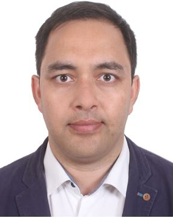
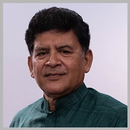

External Collaborators
Dr. Chuansi Gao, PhD
Dr. Gao is a professor in Lund University’s Department of Design Sciences. His research focuses on the effects of thermal climate factors on physiological response and health, and the development of strategies to cope with heat stress and prevent heat-induced illnesses. He is currently involved in an EU H2020 project, a Swedish Sustainable indoor environment project and is also the lead PI of the EU project, Translating climate service information into personalized adaptation strategies to cope with thermal climate stress.Karin Lundgren-Kownacki, PhD
Dr. Lundgren-Kownacki is a researcher at the Swedish Meteorological and Hydrological Institute. She has expertise in extreme heat and health and currently works on climate adaptation. She has done research on thermal comfort in indoor environments among other aspects of the thermal environment.Yu-Chun Wang, PhD
Dr. Wang is a professor and chairman in Chung Yuan Christian University’s Department of Environmental Engineering. Her research focuses on extreme event related infectious diseases including diarrhea, enterovirus infections and influenza. Dr. Wang has received several government grants to conduct in-depth assessments of temperature thresholds for national health warning systems, and to develop health education materials for extreme heat events.Kung-Yueh Camyale Chao, PhD
Dr. Chao is the executive director of the International Climate Development Institute in Taiwan. He has been working in the field of public policy for 20 years and currently focuses on community capacity building and community-based adaptation (CBA) policy surrounding climate change.Cunrui Huang, PhD
Dr. Huang is a professor and chair in the Sun Yat-sen University School of Public Health’s Department of Health Policy & Management. He is the PI on multiple large grants funded by the Chinese government and is working with the Association of Southeast Asian Nations to manage and minimize the increasing climate related threats to human health and societies. Dr. Huang has been organizing annual meetings for the AWARD-APR project to bring together experts from across the globe to address these issues.Dang Thi Anh Thu, MD
Dr. Dang Thi Anh Thu is the Vice-Dean of Public Health Faculty and Vice-Director of Hue University’s Institute for Community Health Research. She has extensive experience working with international researchers to implement studies on various climate change related public health threats. Her research focuses on environmental, community, and occupational health as well as health risk assessment.Tran Ngoc Dang, PhD
Dr. Tran Ngoc Dan is a professor in the Department of Environmental Health at the University of Medicine and Pharmacy, Ho Chi Minh City. He has solid expertise on health impact assessment (HIA) methods and tools, as well as risk assessment with a focus on the impact of climate change, as well as impacts of air pollution on health.Veena Iyer, MD
Dr. Iyer is a medical doctor and a professor at the Indian Institute of Public Health Gandhinagar. Her research interests are focused on public health surveillance and infectious diseases. Dr. Iyer has mapped the comparative burden of common infectious diseases in Gujarat.Sambuddha Chaudhuri, PhD
Dr. Chaudhuri is a trained medical doctor and has a PhD in sociology. His current research focuses on infectious diseases and includes a history of Tuberculosis Control Programmes in India and health communication among marginalized communities.
Megnath Dhimal
Dr. Dhimal is the Chief Research Officer at the Nepal Health Research Council. Dr. Dhimal has conducted several research studies in Nepal investigating the impact of climate change on infectious disease, and has published over 100 scientific articles, and technical reports. He is currently chairing the global health working group at the Global Young Academy.